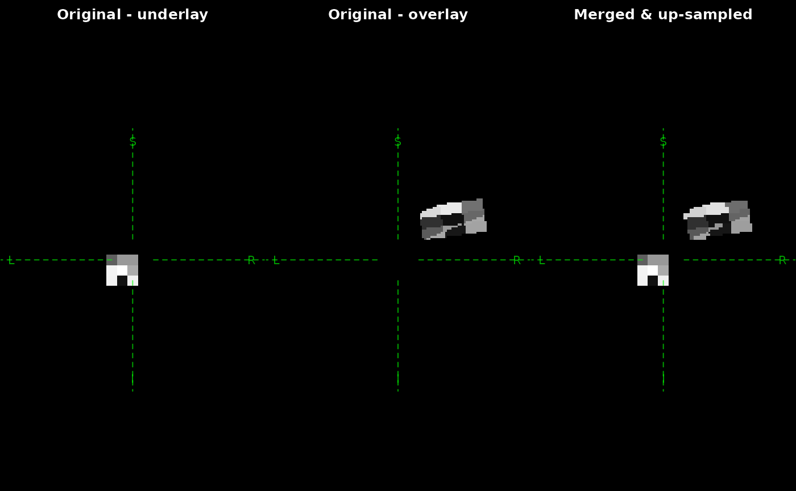

Merge volume data into base image. The images must be static 3-dimensional volume data. Currently time-series or 4-dimensional data is not supported.
Arguments
- x
base image to be merged
- y, ...
images to be merged into
x- thresholds
numerical threshold for
y,..., can be length of one or more, if images to overlay is more than one. The image values lower than the threshold will be trimmed out- reshape
output shape, default is the dimension of
x; if changed, then the underlay will be sampled into the new shape- na_fill
how to handle missing values; default is
NA; for compatibility, you might want to set to 0
Examples
base_array <- array(0, c(15, 15, 15))
base_array[4:6, 4:6, 4:6] <- runif(27) * 255
# generate a 15x15x15 mask with 1mm spacing
vox2ras1 <- diag(1, 4)
vox2ras1[1:3, 4] <- -5
x <- as_ieegio_volume(base_array, vox2ras = vox2ras1)
# 15x15x15 mask with 0.5mmx1mmx1mm spacing but oblique to `x`
vox2ras2 <- matrix(
nrow = 4, byrow = TRUE,
c(
2, 0.2, -0.1, -3,
-0.2, 1, 0.4, -4,
0.3, -0.1, 1, -1,
0, 0, 0, 1
)
)
# vox2ras2[1:3, 4] <- c(-3,-4, -1)
base_array[4:6, 4:6, 4:6] <- runif(27) * 255
y <- as_ieegio_volume(base_array, vox2ras = vox2ras2)
# merge y into x and up-sample mask to 64^3 volume
# set to higher number to get better interpolation quality
# Only voxels of y>0 will be merged to x
z <- merge(x, y, reshape = c(64, 64, 64), thresholds = 0)
# Visualize
oldpar <- par(mfrow = c(1, 3), mar = c(0, 0, 2, 0))
zoom <- 10
crosshair_ras <- c(0, 0, 0)
pixel_width <- 2
plot(x,
zoom = zoom,
position = crosshair_ras,
pixel_width = pixel_width,
main = "Original - underlay")
plot(y,
zoom = zoom,
position = crosshair_ras,
pixel_width = pixel_width,
main = "Original - overlay")
plot(
z,
zoom = zoom,
position = crosshair_ras,
pixel_width = pixel_width,
main = "Merged & up-sampled")

# reset graphical state
par(oldpar)